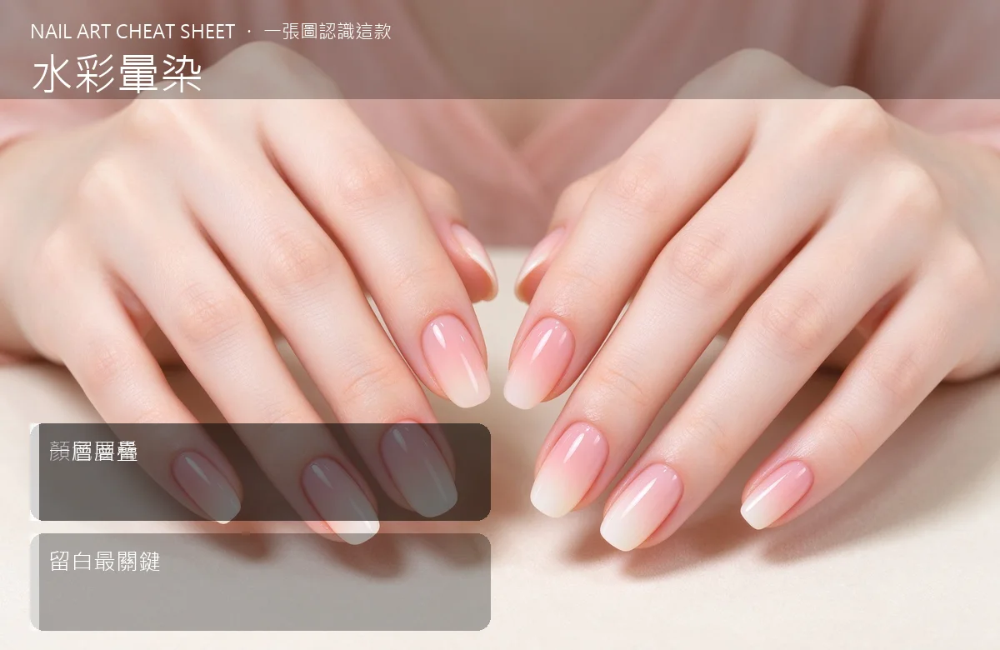

美甲水彩暈染是什麼？中階入門攻略
水彩暈染是把色膠用水或軟化劑稀釋，一層層疊出像水彩畫那種透透的、暈開的感覺。
水彩暈染原理與辨識重點：美甲師不說的顏色要稀
一般色膠蓋色力強、一層就不透明。水彩做法是把色膠稀釋到很淡，像水彩顏料那樣一層層暈上去——顏色疊得越薄越透，邊界自然被另一色吃進去，看起來像是『色在甲面上溶開』。留白很重要：不要整甲填滿，留一塊白底才有水彩那種空靈感。
誰適合做水彩暈染？清透感對號入座
想做春天感、藝術感、文青款的人；日系沙龍很常接這種單，女生客人一看到就想到『森林系』。
水彩暈染美甲施作步驟：稀釋色膠
上好白色或淺色底照燈 → 用稀釋色膠（加暈染液或專用稀釋劑）輕點 → 用乾淨的暈染刷把邊界揉開 → 照燈 → 重點再疊一層加深 → 留白處保持乾淨 → 封層。
水彩暈染優缺點分析：美甲持久度與傷甲評估
| 優點 | 說明 |
|---|---|
| 做出來特別有質感、上 IG 超上相，比一般實色膠高出好幾個檔次。 | 是日系流派的招牌，中階就能上手 |
| 缺點 | 說明 |
| 濃淡很難控，新手常一次下太重整甲髒掉，要等照燈磨掉重來。 | 前置與最大雷區是『一層疊太厚』。水彩的關鍵是薄、是透，一層太深就失去那種雲霧感。記住：寧可淡，也別濃，不夠再疊。沒顧好會打折 |

水彩暈染新手雷區：一層層疊與常見錯誤
注意：最大雷區是『一層疊太厚』。水彩的關鍵是薄、是透，一層太深就失去那種雲霧感。記住：寧可淡，也別濃，不夠再疊。
水彩暈染和其他美甲做法的差別比較
常跟霧面封層配，霧面讓水彩感更像畫；也常跟小花、拉線搭——水彩底＋兩三朵手繪小花，就是完整的日系款。
水彩暈染美甲常見問題 FAQ
Q：色膠要加什麼稀釋？ A：可以用專用的暈染液或水彩稀釋劑，不要加水。普通自來水會讓膠固化失敗，整個毀掉。
Q：一定要白色底嗎？ A：白底最能表現水彩的透。如果用粉膚色底，顏色會偏溫暖；深色底上做水彩就看不出層次了。